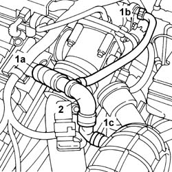
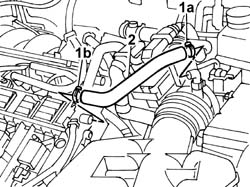

1080D24 engine oil vapour intake pipe - r + r
- Path
- Procedures > 10 ENGINE > 1080 EMISSION CONTROL SYSTEM > 1080D CRANKCASE VAPOUR/GAS RECIRCULATION SYSTEM > 1080D24 engine oil vapour intake pipe - r + r
- Kind
- repair procedure (removal / refitting; the operation number is the code)
- Applies to
- engines: 2.0 TB, 2.4 20V; all production periods
- Interactive page
- https://sloeber94.github.io/elrnDB-lThss/en/#/75185
Applies to: engines: 2.0 TB; all production periods
 Removing
Removing
 Refitting
RefittingSee in Op. 1016A40 Ignition COIL COVER on cylinder head - R.R.
1. Remove the band (1a) on the tappet cover, the band (1b) on the intake hose and the band (1c) on the PCV valve.
2. Remove the engine oil vapour inlet pipe.

Applies to: engines: 2.0 TB; all production periods
Refitting
Removing- Position the engine oil vapour inlet pipe.
- Secure the pipe to the tappet cover, the intake hose and the PCV valve using bands.
See in Op. 1016A40 Ignition COIL COVER on cylinder head - R.R.
Applies to: engines: 2.4 20V; all production periods
Removing
RefittingSee in Op. 1016A40 Ignition COIL COVER on cylinder head - R.R.
1. Remove the band (1a) on the throttle casing hose and the band (1b) on the tappet cover.
2. Remove the engine oil vapour inlet pipe.

Applies to: engines: 2.4 20V; all production periods
Refitting
Removing- Position the engine oil vapour inlet pipe.
- Secure the pipe to the throttle casing hose and the tappet cover using the bands.
See in Op. 1016A40 Ignition COIL COVER on cylinder head - R.R.
Topics linked from this page (1)
Topics that link to this page (6)
- 1016C10 SINGLE CYLINDER HEAD - R.R. and Replace gasket
- 1072B10 INTAKE MANIFOLD - R.R. and Replace gasket
- 1072B48 Air CHAMBER complete with intake manifolds - R.R. and Replace gaskets
- 1072B54 HOSES CONNECTING AIR CHAMBER TO INTAKE MANIFOLD(S) - R.R.
- 1088D36 CONNECTOR ON CRANKCASE FOR CYLINDER HEAD/CRANKCASE WATER CIRCUIT HOSE WITH THERMOSTAT CLOSED - R.R.
- 1088D38 CYLINDER HEAD/CRANKCASE WATER CIRCUIT HOSE WITH THERMOSTAT CLOSED - R.R.